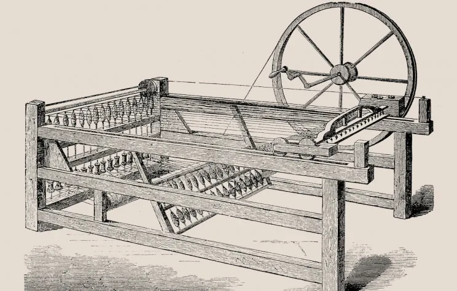

The Enlightenment, a significant intellectual and cultural movement of the 17th and 18th centuries, marked a profound shift in European thought. It was characterized by an emphasis on reason, science, and skepticism of traditional authorities, particularly the church and monarchy. Enlightenment thinkers advocated for the application of rationality to understand and improve human society, championing ideas of individual freedom, democracy, and empirical evidence. This period, often referred to as the "Age of Reason," saw the development of new philosophies and scientific discoveries that fundamentally altered the trajectory of Western thought and governance. The Enlightenment laid the intellectual groundwork for modern democratic institutions and practices, influencing both political revolutions and societal reforms.
One of the most prominent figures of the Enlightenment was Voltaire, a French philosopher and writer known for his wit and advocacy for civil liberties. Voltaire's criticism of the French government and the Catholic Church, combined with his promotion of freedom of speech and religion, made him a key proponent of Enlightenment ideals. His seminal work, "Candide," is a satirical novel that critiques the optimistic philosophy of the time and the injustices of society. Through his writings, Voltaire challenged the status quo and encouraged readers to question authority and seek rational solutions to societal issues. His work exemplifies the Enlightenment's commitment to using reason to challenge existing institutions and promote individual freedoms.
Why is it essential to learn Enlightenment?
Learning about the Enlightenment is crucial for understanding the origins of modern democratic values and institutions. The Enlightenment era fundamentally reshaped political thought by advocating for principles such as individual liberty, equality before the law, and representative government. Philosophers like John Locke and Jean-Jacques Rousseau challenged the existing autocratic systems and proposed new frameworks based on social contracts and the protection of natural rights. Their ideas directly influenced key political revolutions, such as the American Revolution and the French Revolution, which established democratic principles in the governance of nations. By studying the Enlightenment, one gains insight into the philosophical underpinnings of modern democracy, the evolution of human rights, and the ongoing struggle for political and social equality. This historical context helps individuals appreciate and critically engage with contemporary democratic practices and debates, as well as understand the historical development of ideas that continue to shape political discourse today.
The Enlightenment period was a transformative era for the advancement of scientific methodology and empirical research. This era saw the consolidation of the scientific method, characterized by systematic observation, experimentation, and rational analysis. Figures such as Isaac Newton exemplified this shift through their rigorous approach to understanding the natural world, leading to groundbreaking scientific discoveries and the development of classical mechanics. The Enlightenment's emphasis on reason and empirical evidence marked a significant departure from reliance on religious or superstitious explanations. Studying the Enlightenment provides valuable insights into how scientific inquiry evolved and became central to modern knowledge. It also highlights the impact of Enlightenment thinking on subsequent scientific and technological progress, demonstrating the enduring importance of applying reason and evidence to solve complex problems.
The Enlightenment had a profound impact on various cultural and intellectual movements that followed, shaping Western thought and culture. This era fostered a spirit of inquiry and skepticism, leading to significant developments in literature, art, and philosophy. Enlightenment thinkers, such as Voltaire and Denis Diderot, challenged traditional norms and promoted ideas about freedom of expression and intellectual exploration. Their works influenced the rise of secularism, the growth of critical thinking, and the questioning of established traditions. Understanding the Enlightenment helps to appreciate the roots of modern cultural and intellectual currents, including the rise of secular humanism, the emphasis on individualism, and the valorization of reason over tradition. It provides a context for examining how these Enlightenment ideals continue to influence contemporary cultural and intellectual debates, shaping societal values and norms.
Politics
The Emergence of Political Philosophy and Theories
The Enlightenment was a period of profound transformation in political thought, marked by the emergence of new political philosophies that challenged traditional authority and proposed innovative ideas about governance. Central to this intellectual revolution were thinkers like John Locke, who articulated the theory of natural rights and the social contract. Locke's idea that governments should be based on the consent of the governed and that individuals possess inherent rights to life, liberty, and property laid the groundwork for modern democratic theory. His work, particularly "Two Treatises of Government," argued that political authority should be derived from the will of the people rather than divine right or hereditary succession. Another key figure, Jean-Jacques Rousseau, further developed these ideas with his concept of the "general will" and his critique of inequality in his seminal work, "The Social Contract." Rousseau's arguments for popular sovereignty and democratic participation influenced revolutionary movements and the development of democratic institutions. These Enlightenment thinkers collectively shaped the political landscape of the era by promoting principles of political equality, individual rights, and representative governance, which would later manifest in significant political revolutions and the formation of modern democratic states.
The Influence on Revolutionary Movements
The political ideas developed during the Enlightenment had a profound impact on revolutionary movements across Europe and the Americas. The Enlightenment emphasis on reason, individual rights, and the questioning of traditional authority inspired and justified various revolutionary efforts that sought to overturn established political systems. In America, the principles articulated by Enlightenment thinkers were instrumental in the drafting of the Declaration of Independence and the formulation of the U.S. Constitution. The American Revolution, which began in 1775, was significantly influenced by Enlightenment ideals, as leaders like Thomas Jefferson and Benjamin Franklin were heavily inspired by the works of Locke and Montesquieu. Similarly, the French Revolution of 1789 was deeply rooted in Enlightenment thought, particularly the ideas of liberty, equality, and fraternity. Philosophers such as Voltaire and Rousseau provided the intellectual framework that galvanized the revolutionary fervor against the monarchy and aristocracy. These revolutions were not merely political upheavals but were also the realization of Enlightenment ideals in practice, leading to the establishment of democratic institutions and the promotion of human rights.
The Development of Constitutionalism
The Enlightenment period saw the development and widespread adoption of constitutionalism, which emphasized the creation of political frameworks that limited governmental power and protected individual freedoms. This shift was a reaction against absolute monarchy and arbitrary rule, and it aimed to ensure that government authority was constrained by laws and subject to checks and balances. Enlightenment thinkers like Montesquieu, with his influential work "The Spirit of the Laws," argued for the separation of powers among legislative, executive, and judicial branches to prevent any single entity from gaining excessive power. Montesquieu's ideas were pivotal in shaping the structure of modern constitutions and legal systems. The adoption of constitutionalism during the Enlightenment laid the foundation for the development of democratic governance and the protection of civil liberties. It provided a framework for creating political systems that were accountable to the people and designed to uphold the rule of law, influencing the formation of many democratic states and their governing principles.
Society
Social Hierarchy
The Enlightenment era brought about significant shifts in social structure and class dynamics, fundamentally transforming the way societies were organized and perceived. Prior to the Enlightenment, many European societies were rigidly hierarchical, with a clear division between the aristocracy, clergy, and common people. However, the Enlightenment’s emphasis on reason and individualism began to erode these traditional class distinctions. Enlightenment thinkers challenged the legitimacy of inherited social status and advocated for merit-based advancement. For example, the ideas of equality and human rights promoted by philosophers such as Jean-Jacques Rousseau questioned the long-standing social hierarchy. Rousseau’s concept of the "noble savage" and his critique of inequality in "The Social Contract" argued that social and economic inequalities were artificial constructs rather than natural or divine orders. These ideas contributed to a growing sense of class consciousness among the common people and fueled demands for social and political reforms. The Enlightenment also saw the rise of the bourgeoisie, a new social class composed of merchants, professionals, and intellectuals who gained influence through their economic and educational achievements. This shift led to a more fluid social structure where individuals could potentially rise in status based on talent and education rather than noble birthright.
Religion
During the Enlightenment, religion was a focal point of intellectual critique and reformation, as the period's emphasis on reason and empirical evidence challenged traditional religious doctrines and institutions. Enlightenment thinkers, known as philosophes, promoted the idea of deism, which posited that while a divine being may have created the universe, it does not intervene in its workings. This perspective was reflected in the works of figures such as Voltaire and Thomas Paine, who critiqued organized religion's dogmas and its influence on politics and society. Voltaire’s satirical writings, including "Candide," questioned the role of religion in perpetuating intolerance and superstition. Meanwhile, Paine’s "The Age of Reason" argued for a rational approach to religion, advocating for a more secular and humanistic understanding of spirituality. This intellectual movement contributed to the secularization of public life and promoted religious tolerance and freedom, influencing the development of modern democratic and secular states. The Enlightenment’s reexamination of religion emphasized the importance of reason and individual rights over traditional religious authority, setting the stage for future religious and philosophical developments.
Daily Life
During the Age of Discovery, the daily life of slaves, particularly in European colonies, was marked by extreme hardship and limited autonomy. Slaves were subjected to grueling labor conditions on plantations, in mines, or in domestic settings. In the Americas, for example, slaves worked long hours under harsh conditions, performing strenuous tasks such as sugar cane cultivation or gold mining. Their living conditions were typically poor, with minimal shelter, inadequate food, and scant medical care. Slaves had few legal rights and were considered property rather than individuals, which meant they faced severe punishment for disobedience or perceived misconduct. Despite the oppressive conditions, slaves formed strong communities, often preserving elements of their African heritage and developing their own cultural practices and social networks. Resistance to their conditions was also a part of their daily lives, whether through overt acts of rebellion or subtle forms of defiance like work slowdowns and escape attempts.
The daily lives of low-class individuals during the Enlightenment were characterized by economic hardship and limited social mobility. For the vast majority of peasants and laborers, life was marked by long working hours, meager wages, and poor living conditions. Agricultural labor was a common occupation for low-class individuals, who worked on farms under often harsh conditions. The Enlightenment did not bring immediate relief to these workers, as economic and social reforms were slow to impact their lives. Many low-class people lived in small, crowded homes with minimal amenities, and their daily routines revolved around subsistence farming or low-wage labor. Despite these challenges, the Enlightenment's emphasis on reason and progress began to highlight the stark inequalities faced by lower-class individuals, setting the stage for later social reforms.
Middle-class individuals during the Enlightenment experienced relative economic stability and increasing social mobility compared to lower-class individuals. This period saw the rise of the bourgeoisie, a social class that included merchants, professionals, and intellectuals. The middle class benefitted from the expansion of trade and commerce, which provided opportunities for economic advancement and social status. Their daily lives often included a focus on education, intellectual pursuits, and participation in the burgeoning cultural and social activities of the time. The middle class played a crucial role in the spread of Enlightenment ideas, as they had the resources and education to engage with and support the philosophical and scientific advancements of the era. Despite their improved status, middle-class individuals were still subject to social hierarchies and often aspired to attain higher social positions through wealth and education.
The upper class during the Enlightenment, including nobility and wealthy landowners, enjoyed significant privileges and a high standard of living. Their daily lives were characterized by opulence and leisure, with access to luxury goods, grand estates, and extensive social networks. The upper class engaged in cultural activities such as attending salons, participating in intellectual discussions, and commissioning artworks. The Enlightenment’s emphasis on reason and individualism also influenced the upper class, leading to greater interest in the arts, sciences, and philosophical ideas. However, the social and economic privileges of the upper class were increasingly scrutinized as Enlightenment thinkers challenged traditional hierarchies and advocated for greater equality. Despite these challenges, the upper class maintained significant influence and power, shaping the cultural and political landscape of the time.
Family and Gender Roles
The Enlightenment period significantly impacted economic life by fostering new economic theories and practices that transformed European economies. Central to this economic transformation was the development of capitalism and the refinement of economic theories. Enlightenment thinkers like Adam Smith played a pivotal role in shaping economic thought with his seminal work, "The Wealth of Nations," published in 1776. Smith advocated for free markets and the concept of the "invisible hand," arguing that individuals pursuing their self-interest in a competitive market would contribute to overall economic prosperity. This idea challenged the prevailing mercantilist policies that had previously dominated European economic policies, which focused on accumulating wealth through trade surpluses and government intervention. The Enlightenment also saw advancements in banking and finance, with the establishment of modern financial institutions and practices that facilitated economic growth and investment. The rise of commercial capitalism led to increased trade, urbanization, and the expansion of industries such as textiles and shipbuilding. This period laid the groundwork for the Industrial Revolution, which would further accelerate economic changes in the following century. Overall, the Enlightenment's emphasis on reason and empirical evidence influenced the development of modern economic theories and practices, shaping the economic landscape of Europe.
Economic Life
The Enlightenment period significantly impacted economic life by fostering new economic theories and practices that transformed European economies. Central to this economic transformation was the development of capitalism and the refinement of economic theories. Enlightenment thinkers like Adam Smith played a pivotal role in shaping economic thought with his seminal work, "The Wealth of Nations," published in 1776. Smith advocated for free markets and the concept of the "invisible hand," arguing that individuals pursuing their self-interest in a competitive market would contribute to overall economic prosperity. This idea challenged the prevailing mercantilist policies that had previously dominated European economic policies, which focused on accumulating wealth through trade surpluses and government intervention. The Enlightenment also saw advancements in banking and finance, with the establishment of modern financial institutions and practices that facilitated economic growth and investment. The rise of commercial capitalism led to increased trade, urbanization, and the expansion of industries such as textiles and shipbuilding. This period laid the groundwork for the Industrial Revolution, which would further accelerate economic changes in the following century. Overall, the Enlightenment's emphasis on reason and empirical evidence influenced the development of modern economic theories and practices, shaping the economic landscape of Europe.
Education and Intellectual Life
The Enlightenment era marked a dramatic expansion in educational opportunities and the dissemination of knowledge, significantly altering social dynamics. Prior to this period, education was largely the privilege of the elite, with limited access for the common populace. However, Enlightenment thinkers championed the value of education as a means of intellectual and social advancement. One of the key figures in promoting education was Denis Diderot, who edited the "Encyclopédie," a comprehensive reference work that aimed to collect and disseminate knowledge across a wide range of subjects. The "Encyclopédie" played a crucial role in spreading Enlightenment ideas and making knowledge more accessible to the broader public. Additionally, the period saw the establishment of new educational institutions and reforms in existing ones, aimed at promoting critical thinking and scientific inquiry. For instance, the founding of academies and learned societies, such as the Royal Society in Britain, provided platforms for intellectual exchange and scientific research. The increased emphasis on education not only elevated the intellectual climate of the time but also contributed to the development of a more informed and engaged citizenry, which in turn supported the broader social and political changes occurring during the Enlightenment.
Cultural Life
The Enlightenment also brought about a transformation in cultural norms and public discourse, fostering a climate of intellectual exchange and critical thinking. Enlightenment thinkers advocated for the use of reason and empirical evidence in all areas of life, including culture and social norms. This shift was reflected in the changing attitudes towards religion, morality, and social practices. Philosophers like Voltaire, who criticized the dogmatic nature of established religions, and David Hume, who questioned traditional beliefs through empirical skepticism, contributed to a broader cultural shift towards secularism and rationalism. The Enlightenment era saw the rise of salons and coffeehouses as spaces for intellectual discussion and debate, where ideas about society, politics, and philosophy could be freely exchanged. These venues became central to the public sphere, allowing people from various backgrounds to engage in discussions about contemporary issues and challenge established norms. This cultural shift fostered a more open and dynamic public discourse, which encouraged the questioning of traditional authorities and the development of new ideas about human rights, governance, and social organization. As a result, the Enlightenment contributed to the evolution of modern cultural and intellectual norms that prioritize reason, evidence, and critical inquiry.
Science & Philosophy
Science
During the Enlightenment, the scientific revolution reached its zenith, fundamentally transforming how knowledge was acquired and understood. This period, spanning from the late 17th to the early 19th centuries, witnessed the application of reason, empirical evidence, and the scientific method to various domains of inquiry. Enlightenment thinkers championed a systematic approach to scientific exploration, which led to significant advancements in numerous fields, including physics, astronomy, biology, and chemistry. The era’s emphasis on observation, experimentation, and skepticism of traditional beliefs paved the way for a more accurate and comprehensive understanding of the natural world. This scientific progress was not only a triumph of intellectual curiosity but also a catalyst for broader social and technological changes.
In physics and chemistry, the Enlightenment was marked by groundbreaking discoveries and theoretical advancements that reshaped the understanding of matter and energy. One of the most significant figures was Isaac Newton, whose work laid the foundation for classical mechanics. His seminal work, "Philosophiæ Naturalis Principia Mathematica" (1687), introduced the laws of motion and universal gravitation, offering a unified framework for understanding the physical world. Newton’s laws provided a powerful tool for predicting the behavior of objects in motion and laid the groundwork for future scientific inquiry. In chemistry, Antoine Lavoisier made substantial contributions with his development of the modern chemical nomenclature and his theory of the conservation of mass. His meticulous experiments and methodical approach established chemistry as a quantitative science and dispelled many of the erroneous beliefs held by alchemists.
The Enlightenment also witnessed remarkable progress in the fields of biology and medicine, driven by an increasing emphasis on empirical research and detailed observation. Carl Linnaeus, a prominent botanist, introduced a systematic classification system for plants and animals, known as binomial nomenclature. Linnaeus’s system, outlined in his works such as "Systema Naturæ" (1735), provided a standardized method for naming and categorizing organisms, which remains foundational in biological taxonomy. Additionally, the work of William Harvey revolutionized the understanding of human anatomy and physiology. Harvey’s discovery of the circulatory system, detailed in "Exercitatio Anatomica de Motu Cordis et Sanguinis in Animalibus" (1628), demonstrated that blood circulates through the body in a closed system, a groundbreaking revelation that changed medical practice and research.
In astronomy, the Enlightenment era was marked by significant advancements that expanded the understanding of the cosmos and challenged established paradigms. The work of astronomers such as Johann Kepler and Galileo Galilei played a crucial role in this transformation. Kepler’s laws of planetary motion, articulated in "Astronomia Nova" (1609) and "Harmonices Mundi" (1619), provided a mathematical description of the orbits of planets around the Sun, which supported the heliocentric model proposed by Copernicus. Galileo’s telescopic observations, documented in "Sidereus Nuncius" (1610), provided evidence for the phases of Venus and the moons of Jupiter, further corroborating the heliocentric theory and challenging the geocentric view held by the Church. These astronomical discoveries not only enhanced the understanding of celestial mechanics but also demonstrated the power of empirical observation in challenging traditional scientific beliefs.
The Enlightenment’s scientific advancements had a profound impact on technology and society, fostering innovations that transformed daily life and industry. The period saw the development of new tools and techniques that facilitated scientific research and practical applications. For instance, the invention of the steam engine by James Watt in the late 18th century, building on earlier work by Thomas Newcomen, marked a significant leap in technological progress. The steam engine’s efficiency and versatility spurred the Industrial Revolution, revolutionizing transportation, manufacturing, and various aspects of economic life. Furthermore, the scientific emphasis on empirical evidence and experimentation contributed to the rise of modern science as a disciplined and collaborative pursuit, shaping the trajectory of technological development and societal advancement in subsequent centuries.
Philosophy
The Enlightenment, often referred to as the Age of Reason, was a period of profound philosophical development that shaped modern Western thought. Spanning from the late 17th to the early 19th centuries, this era emphasized reason, individualism, and skepticism of traditional authority. Enlightenment philosophers sought to apply rational thought and empirical evidence to understand and improve human existence. This intellectual movement challenged established doctrines and fostered the exploration of new ideas about politics, society, and human nature. Philosophers of the Enlightenment laid the groundwork for contemporary philosophy, influencing subsequent movements and shaping the intellectual landscape of the modern world.
The Enlightenment witnessed a vibrant debate between rationalism and empiricism, two philosophical approaches to knowledge and understanding. Rationalism, championed by René Descartes, emphasized the role of reason and innate ideas in acquiring knowledge. Descartes’ method of doubt, articulated in his work "Meditations on First Philosophy" (1641), sought to establish a foundation of certainty by questioning all previously held beliefs and relying on reason as the sole path to knowledge. In contrast, empiricism, represented by philosophers such as John Locke and David Hume, argued that knowledge is derived from sensory experience and observation. Locke’s "An Essay Concerning Human Understanding" (1689) posited that the mind is a blank slate at birth and that knowledge is built through experience. Hume’s "A Treatise of Human Nature" (1739-40) further explored the limitations of human knowledge and the nature of belief, emphasizing the empirical basis of understanding and the role of habits and experiences.
Enlightenment philosophers made significant contributions to political philosophy, particularly through the development of social contract theory. Jean-Jacques Rousseau’s "The Social Contract" (1762) argued for the importance of the general will and the concept of popular sovereignty in establishing legitimate government. Rousseau’s ideas about the social contract emphasized the need for a collective agreement among individuals to form a society based on equality and mutual benefit. Similarly, John Locke’s "Two Treatises of Government" (1689) presented a theory of government based on natural rights and the consent of the governed. Locke’s work influenced the development of constitutional democracy and the protection of individual liberties. These theories provided a foundation for modern political systems and inspired revolutionary movements aimed at achieving political and social reform.
Enlightenment philosophers also explored new perspectives on human nature and ethics, challenging traditional moral and religious doctrines. Immanuel Kant’s "Critique of Pure Reason" (1781) sought to reconcile empirical knowledge with rationalism by exploring the nature of human cognition and the limits of reason. Kant’s "Groundwork for the Metaphysics of Morals" (1785) introduced the concept of the categorical imperative, a principle of moral reasoning that emphasizes the universality of ethical actions and the importance of duty. Kant’s philosophy marked a significant shift towards an ethical framework grounded in reason and autonomy. Additionally, the utilitarian philosophy of Jeremy Bentham and John Stuart Mill, articulated in works such as Bentham’s "An Introduction to the Principles of Morals and Legislation" (1789) and Mill’s "Utilitarianism" (1863), advocated for the greatest happiness principle as a measure of moral and political decisions, emphasizing the consequences of actions and the promotion of overall well-being.
The philosophical advancements of the Enlightenment had a lasting impact on modern philosophy and societal development. Enlightenment thinkers promoted the ideals of reason, individual rights, and secularism, which influenced various aspects of contemporary thought and governance. The emphasis on reason and empirical evidence contributed to the development of modern science and rational inquiry, while the exploration of political and ethical theories laid the groundwork for democratic institutions and human rights. The Enlightenment’s focus on education, rationality, and individual freedom helped shape modern Western values and institutions, and its legacy continues to inform contemporary philosophical debates and societal progress. The era’s commitment to intellectual rigor and critical inquiry set a precedent for future generations, fostering an ongoing quest for knowledge and understanding.
Inventions
The Enlightenment, spanning the late 17th to the early 19th centuries, was a period marked by remarkable advancements in science and technology. This era, often dubbed the Age of Reason, was characterized by a surge in intellectual curiosity and empirical research that led to numerous groundbreaking inventions. Enlightenment thinkers and inventors applied principles of reason and experimentation to solve practical problems and improve everyday life. These innovations not only reflected the era’s commitment to progress but also laid the foundation for the technological advancements of the Industrial Revolution. The inventions of the Enlightenment period were instrumental in shaping modern society and continue to influence our world today.
One of the most transformative inventions of the Enlightenment was the steam engine, which played a crucial role in the Industrial Revolution. James Watt, a Scottish inventor and mechanical engineer, significantly improved the design of the steam engine in the late 18th century. While earlier versions of the steam engine, such as those developed by Thomas Newcomen, were primarily used for pumping water out of mines, Watt’s enhancements made it more efficient and versatile. Watt’s engine incorporated a separate condenser, which greatly increased its efficiency by reducing energy loss. This innovation not only revolutionized the textile industry by powering machinery but also facilitated advancements in transportation, such as the development of steamships and locomotives. Watt’s steam engine was a key factor in the mechanization of industry and transportation, profoundly impacting economic and social structures.
Cr.: Wikipedia
The Spinning Jenny, invented by James Hargreaves in 1764, was another significant innovation of the Enlightenment that transformed the textile industry. Prior to the Spinning Jenny, spinning was a labor-intensive process that limited production capacity. Hargreaves’ invention addressed this issue by allowing a single worker to spin multiple threads simultaneously. The original design of the Spinning Jenny featured eight spindles, but later versions increased the number of spindles to improve productivity further. This invention greatly enhanced the efficiency of yarn production, reducing costs and increasing output. The Spinning Jenny played a pivotal role in the textile industry’s transition from manual labor to mechanized production, contributing to the broader changes brought about by the Industrial Revolution.

Cr.: The Economic Historian
Bifocal glasses, invented by Benjamin Franklin in the late 18th century, represent a significant advancement in optical technology. Franklin, an American polymath and statesman, sought to address the issue faced by individuals who required both reading glasses and distance glasses. By combining two types of lenses into a single pair of spectacles, Franklin created bifocals that allowed users to see clearly at both close and far distances without needing to switch between different pairs of glasses. This innovation was particularly valuable for those with presbyopia, a common age-related vision condition. Bifocal glasses improved the quality of life for many individuals by providing a practical solution to a common vision problem and showcased Franklin’s contributions to practical inventions during the Enlightenment.
Cr.: Wordpress
Key Lessons
Emphasis on Reason and Rationality
One of the most enduring lessons from the Enlightenment is the emphasis on reason and rationality. Enlightenment thinkers such as Immanuel Kant, Voltaire, and John Locke championed the use of reason as the primary source of knowledge and authority. This period marked a significant departure from reliance on tradition, religious dogma, and superstition. For instance, Immanuel Kant's work on epistemology emphasized the importance of reason in understanding the world and making informed decisions. The Enlightenment's focus on rational inquiry laid the groundwork for the development of modern science and philosophy. This lesson remains relevant today as societies continue to grapple with complex issues. The emphasis on critical thinking and evidence-based decision-making is crucial in addressing contemporary challenges, from public policy to personal choices. Embracing reason and rationality helps foster a more informed and enlightened society capable of addressing modern problems with clarity and efficiency.
Value of Individual Rights and Freedoms
The Enlightenment period was instrumental in shaping the modern concept of individual rights and freedoms. Thinkers such as John Locke and Jean-Jacques Rousseau argued that individuals possess inherent rights, including life, liberty, and property, which should be protected by government. Locke's "Two Treatises of Government" articulated the idea that legitimate government is based on the consent of the governed and exists to safeguard individual rights. This concept profoundly influenced the development of democratic institutions and human rights frameworks. The Enlightenment's focus on individual liberties has had a lasting impact on contemporary discussions about civil rights, freedom of speech, and equality. Understanding this legacy encourages the continued protection and promotion of personal freedoms in modern societies, ensuring that democratic values are upheld and that individuals are empowered to pursue their aspirations and express their beliefs without undue constraint.
Importance of Education and Knowledge Dissemination
During the Enlightenment, there was a profound appreciation for the value of education and the dissemination of knowledge. The period saw the establishment of institutions such as encyclopedias and academies dedicated to the pursuit of knowledge and the spread of new ideas. Denis Diderot’s "Encyclopédie," for example, aimed to compile and disseminate human knowledge across various fields, reflecting the era’s commitment to intellectual advancement. The Enlightenment thinkers believed that access to education and information was essential for personal and societal progress. This principle remains highly relevant today as education continues to be a critical factor in social and economic development. Ensuring that knowledge is accessible and that educational opportunities are available to all individuals fosters a more informed and capable society. The Enlightenment's focus on education underscores the importance of supporting lifelong learning and promoting access to information as essential components of personal and societal growth.
Advocacy for Scientific Inquiry and Innovation
The Enlightenment era was characterized by a strong advocacy for scientific inquiry and innovation, marking a significant shift towards empirical investigation and technological advancement. Figures such as Isaac Newton and Galileo Galilei made groundbreaking contributions that shaped the scientific revolution. Newton's work in physics and mathematics, including his laws of motion and universal gravitation, exemplified the era's commitment to understanding the natural world through observation and experimentation. The Enlightenment's support for scientific progress laid the foundation for subsequent technological innovations and industrial advancements. This lesson remains pertinent as scientific inquiry continues to drive progress across various fields, from medicine to engineering. Embracing a spirit of curiosity and rigor in scientific exploration is essential for addressing contemporary challenges, advancing technology, and improving the quality of life. The Enlightenment's legacy highlights the importance of supporting and investing in scientific research and innovation as a means of driving progress and solving global issues.
The Role of Critique and Reform in Society
The Enlightenment emphasized the importance of critique and reform as mechanisms for societal improvement. Enlightenment thinkers frequently challenged established institutions and norms, advocating for reforms in government, religion, and social practices. Voltaire, for instance, was a vocal critic of religious intolerance and censorship, advocating for freedom of thought and expression. This critical approach contributed to the development of more just and equitable societies by questioning and addressing injustices and inefficiencies. The lesson here is that constructive criticism and a willingness to reform are vital for societal progress. In contemporary contexts, this means fostering environments where open dialogue, critical examination, and reform are encouraged to address systemic issues and promote positive change. The Enlightenment's focus on critique and reform underscores the importance of maintaining a dynamic and responsive society capable of evolving and improving over time.
Facts about Enlightenment
The Enlightenment was characterized by the emergence of influential thinkers who shaped the intellectual landscape of the 17th and 18th centuries. Key figures included Voltaire, who advocated for civil liberties and criticized religious intolerance; John Locke, who developed theories on government and individual rights; and Jean-Jacques Rousseau, who explored concepts of social contract and democracy. These thinkers challenged traditional authority and promoted the use of reason and evidence over dogma. Their ideas laid the groundwork for modern democratic principles and human rights, profoundly impacting political and philosophical thought. Their works continue to be studied for their contributions to modern liberalism and democratic theory.
The Enlightenment saw the rise of empiricism and the scientific method as central to the pursuit of knowledge. Philosophers and scientists like Francis Bacon and Isaac Newton emphasized observation, experimentation, and evidence-based reasoning. Bacon’s advocacy for the empirical method and Newton’s formulation of the laws of motion and universal gravitation exemplify this shift. This focus on empirical research and scientific inquiry led to significant advancements in various fields, including physics, astronomy, and medicine. The scientific approach developed during the Enlightenment remains foundational to contemporary scientific research and innovation.
One of the most significant achievements of the Enlightenment was the creation of comprehensive encyclopedias that aimed to compile and disseminate human knowledge. The most notable example is the "Encyclopédie," edited by Denis Diderot and Jean le Rond d'Alembert. Published between 1751 and 1772, this work aimed to gather and make accessible a wide range of information on various subjects, reflecting the Enlightenment’s commitment to education and intellectual exchange. The "Encyclopédie" played a crucial role in spreading Enlightenment ideas and fostering a more informed public, influencing future encyclopedic projects and educational practices.
The Enlightenment had a profound impact on political and social reforms, contributing to the development of modern democratic institutions and human rights. The ideas of Enlightenment thinkers influenced major historical events such as the American Revolution and the French Revolution. Documents like the Declaration of Independence and the Declaration of the Rights of Man and of the Citizen drew heavily on Enlightenment principles of liberty, equality, and fraternity. These reforms sought to establish governments based on the consent of the governed and to protect individual rights, setting precedents for modern democratic governance and human rights frameworks.
Philosophical rationalism, which emphasizes reason as the primary source of knowledge and authority, was a central tenet of the Enlightenment. Rationalist philosophers such as René Descartes and Baruch Spinoza explored the nature of knowledge, existence, and ethics through rigorous logical analysis. Descartes’ method of systematic doubt and his famous dictum "Cogito, ergo sum" ("I think, therefore I am") exemplify the rationalist approach. The development of rationalism during the Enlightenment laid the foundation for modern philosophical inquiry and critical thinking. It challenged traditional beliefs and encouraged a more analytical and systematic approach to understanding reality and human existence.
Quiz
1. How did the Hubble Deep Field observation in 1995 change our understanding of the universe?
2. Describe one contribution of ancient Babylonians to early astronomy.
3. Explain the impact of the Islamic Golden Age on the development of astronomy during the medieval period.
4. How did the heliocentric model proposed by Copernicus revolutionize our understanding of the solar system?
5. What are some of the key research areas in contemporary astronomy, and why are they significant?